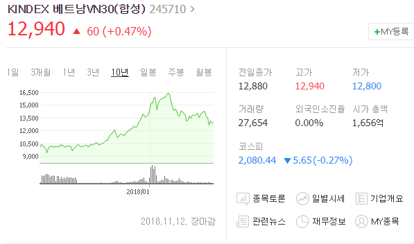

이 투자신탁은 장외파생상품을 주된 투자대상자산으로 하여 1좌당 순자산가치의 변동률을 기초지수인 “VN30 지수(VN30 Index)”의 일간변동률과 유사하도록 투자신탁재산을 운용함을 목적으로 합니다. 이를 위하여 추적대상지수인 VN30 지수(VN30 Price Return Index)를 기초자산으로 하여 수익이 결정되는 장외파생상품(Swap)에 주로 투자합니다.
이 투자신탁은 별도의 환헤지를 하지 않으므로, 이 투자신탁의 1좌당 순자산가치는 기초지수의 원화환산 후 수익률(원화환산 지수)에 연동하게 됩니다.
※ 유의사항
* 집합투자상품은 실적배당상품으로 운용결과에 따른 이익 또는 손실이 투자자에게 귀속됩니다.
* 집합투자상품은 예금자보호법에 따라 예금보험공사가 보호하지 않으며, 원본의 손실이 발생할 수 있습니다.
* 집합투자증권을 취득하기 전에(투자대상, 환매방법 및 보수 등에 관하여) 투자설명서를 반드시 읽어주시기 바랍니다.
* 설정일 이후부터의 기준가격 상세정보는 ‘엑셀파일 다운로드’를 통해 상세히 확인 가능합니다.
* 본 웹 사이트에서 제공하는 지수 및 수익률 정보는 투자 참고 사항이며 오류가 발생하거나 지연될 수 있습니다.
* 제공된 정보에 의한 투자결과에 대한 법적인 책임을 지지 않습니다.
* ‘위험평가액(d)=총위험노출액(b)-담보평가액(C)’이 0(Zero) 이하가 될 경우, 위험평가액은 0(Zero)으로 산출됩니다.